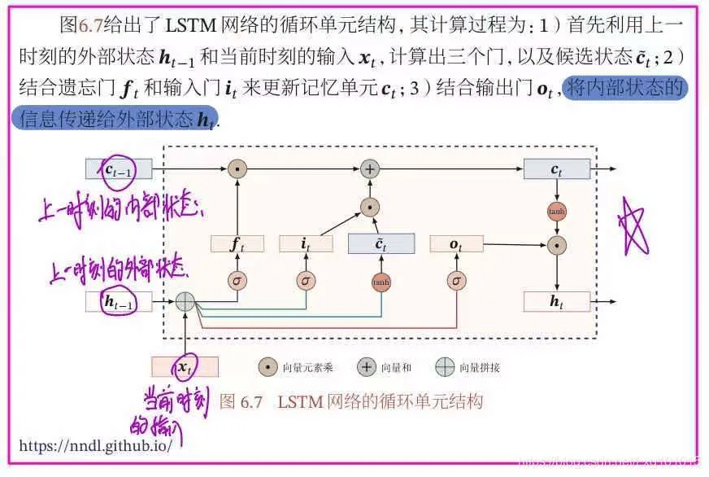

深度学习¶
一、神经网络¶

🧠 一、神经网络原理¶
神经网络是一种模拟人脑神经元结构的机器学习模型。 核心思想是：
通过多层非线性变换，将输入特征映射到输出结果。
1️⃣ 神经元模型（Perceptron）¶
每个神经元接受输入 \(x_1, x_2, \dots, x_n\)，计算加权和再加上偏置：
然后通过激活函数 \(f(z)\) 得到输出：
常见激活函数：
| 激活函数 | 表达式 | 特点 |
|---|---|---|
| Sigmoid | \(f(z) = \frac{1}{1+e^{-z}}\) | 平滑、适合二分类，但可能梯度消失 |
| ReLU | \(f(z) = \max(0, z)\) | 常用、收敛快 |
| Tanh | \(f(z) = \tanh(z)\) | 输出范围 \((-1,1)\)，对称性好 |
| Softmax | \(f_i(z) = \frac{e^{z_i}}{\sum_j e^{z_j}}\) | 多分类输出 |
2️⃣ 网络结构（Network Architecture）¶
典型前馈神经网络结构：
每一层的输出作为下一层的输入。
例如一个两层神经网络：
- 输入层：\(x \in \mathbb{R}^n\)
- 隐藏层：\(h = f(W_1 x + b_1)\)
- 输出层：\(\hat{y} = g(W_2 h + b_2)\)
⚙️ 二、数学推导过程¶
1️⃣ 前向传播（Forward Propagation）¶
输入 \(x\) 经各层线性变换 + 激活函数： $$ z^{(l)} = W^{(l)} a^{(l-1)} + b^{(l)} \ a^{(l)} = f^{(l)}(z^{(l)}) $$
最终输出预测： $$ \hat{y} = a^{(L)} $$ 其中 \(L\) 是网络的层数。
2️⃣ 损失函数（Loss Function）¶
（1）回归问题¶
常用均方误差（MSE）： $$ L = \frac{1}{2m}\sum_{i=1}^{m} (\hat{y}_i - y_i)^2 $$
（2）分类问题¶
常用交叉熵损失（Cross-Entropy）： $$ L = -\frac{1}{m} \sum_{i=1}^{m} \sum_{k=1}^{K} y_{ik} \log(\hat{y}_{ik}) $$
3️⃣ 反向传播（Backpropagation）¶
目标：最小化损失函数 \(L\)。 使用 梯度下降法（Gradient Descent） 更新参数。
对权重求导： $$ \frac{\partial L}{\partial W^{(l)}} = \frac{\partial L}{\partial a^{(l)}} \cdot \frac{\partial a^{(l)}}{\partial z^{(l)}} \cdot \frac{\partial z^{(l)}}{\partial W^{(l)}} $$
更新参数： $$ W^{(l)} := W^{(l)} - \eta \frac{\partial L}{\partial W^{(l)}}, \quad b^{(l)} := b^{(l)} - \eta \frac{\partial L}{\partial b^{(l)}} $$
其中 \(\eta\) 为学习率（learning rate）。
📊 三、评估指标¶
| 类型 | 指标 | 公式 |
|---|---|---|
| 分类 | 准确率（Accuracy） | \(\text{Accuracy} = \frac{TP + TN}{TP + TN + FP + FN}\) |
| 分类 | 精确率（Precision） | \(\text{Precision} = \frac{TP}{TP + FP}\) |
| 分类 | 召回率（Recall） | \(\text{Recall} = \frac{TP}{TP + FN}\) |
| 分类 | F1 分数 | \(F1 = 2 \times \frac{P \times R}{P + R}\) |
| 回归 | 均方误差（MSE） | \(\text{MSE} = \frac{1}{n}\sum(\hat{y} - y)^2\) |
| 回归 | \(R^2\) | \(R^2 = 1 - \frac{\sum(\hat{y}-y)^2}{\sum(y-\bar{y})^2}\) |
💻 四、实现代码（PyTorch）¶
以下示例是一个简单的两层神经网络实现二分类任务。
import torch
import torch.nn as nn
import torch.optim as optim
from sklearn.datasets import make_moons
from sklearn.model_selection import train_test_split
from sklearn.preprocessing import StandardScaler
# 1. 数据准备
X, y = make_moons(n_samples=1000, noise=0.2, random_state=42)
scaler = StandardScaler()
X = scaler.fit_transform(X)
X_train, X_test, y_train, y_test = train_test_split(X, y, test_size=0.2, random_state=42)
X_train = torch.FloatTensor(X_train)
y_train = torch.LongTensor(y_train)
X_test = torch.FloatTensor(X_test)
y_test = torch.LongTensor(y_test)
# 2. 模型定义
class NeuralNetwork(nn.Module):
def __init__(self, input_dim, hidden_dim, output_dim):
super(NeuralNetwork, self).__init__()
self.fc1 = nn.Linear(input_dim, hidden_dim)
self.relu = nn.ReLU()
self.fc2 = nn.Linear(hidden_dim, output_dim)
def forward(self, x):
x = self.fc1(x)
x = self.relu(x)
x = self.fc2(x)
return x
model = NeuralNetwork(2, 16, 2)
# 3. 损失函数与优化器
criterion = nn.CrossEntropyLoss()
optimizer = optim.Adam(model.parameters(), lr=0.01)
# 4. 训练过程
for epoch in range(200):
outputs = model(X_train)
loss = criterion(outputs, y_train)
optimizer.zero_grad()
loss.backward()
optimizer.step()
if (epoch+1) % 20 == 0:
print(f"Epoch [{epoch+1}/200], Loss: {loss.item():.4f}")
# 5. 评估
with torch.no_grad():
y_pred = model(X_test)
acc = (y_pred.argmax(1) == y_test).float().mean()
print(f"Test Accuracy: {acc:.4f}")
🧩 五、模型优化方法¶
| 方法 | 说明 |
|---|---|
| 学习率调整（LR Scheduler） | 控制学习率衰减 |
| 权重初始化 | Xavier、He 初始化能改善收敛 |
| 正则化 | L2 正则、Dropout 防止过拟合 |
| Batch Normalization | 稳定分布，加速训练 |
| 早停法（Early Stopping） | 防止过拟合 |
| 数据增强（Data Augmentation） | 扩充样本集，提高泛化性 |
⚠️ 六、注意事项¶
- 输入数据需标准化或归一化；
- 避免学习率过大或过小；
- ReLU 可解决梯度消失，但注意 “ReLU 死亡” 问题；
- 网络层数过多可能导致过拟合；
- 使用 GPU 可显著加速训练；
- 合理选择批大小（batch size）。
⚖️ 七、优缺点总结¶
| 优点 | 缺点 |
|---|---|
| 能学习复杂非线性关系 | 需要大量数据和计算资源 |
| 泛化能力强 | 不易解释（黑箱） |
| 适用范围广（分类、回归、生成） | 超参数调节困难 |
| 可端到端学习 | 容易过拟合 |
🧭 八、学习建议与进阶路线¶
| 阶段 | 学习内容 | 工具 |
|---|---|---|
| 入门 | 感知机、前向传播、激活函数 | Numpy |
| 进阶 | 反向传播、优化器、正则化 | PyTorch |
| 提升 | CNN、RNN、LSTM | PyTorch / TensorFlow |
| 高阶 | Transformer、预训练模型 | HuggingFace Transformers |
| 部署 | ONNX、TensorRT、Triton | 深度学习部署框架 |
二、CNN¶

🧠 一、CNN 原理（Convolutional Neural Network）¶
卷积神经网络（CNN）是一类专为处理具有网格结构数据（如图像）设计的神经网络。 传统神经网络对输入特征完全连接，而 CNN 通过 局部感受野（local receptive field） 和 权值共享（weight sharing），显著减少参数数量并提升特征提取能力。
1️⃣ CNN 的核心思想¶
- 卷积层（Convolution Layer）：提取局部特征
- 池化层（Pooling Layer）：降维与防止过拟合
- 全连接层（Fully Connected Layer）：整合特征进行分类或回归
典型结构：
2️⃣ 卷积操作（Convolution Operation）¶
以二维卷积为例，给定输入矩阵 \(X\) 和卷积核（权重矩阵）\(K\)：
该操作称为卷积（Convolution）。 卷积层通过滑动卷积核在输入上提取局部特征，如边缘、纹理等。
3️⃣ 特征图（Feature Map）¶
每个卷积核可学习一种特征模式。 一个卷积层可以包含多个卷积核，从而生成多个特征图（Feature Map）。
例如输入大小为 \((H, W, C_{\text{in}})\)，卷积核大小为 \((k, k, C_{\text{in}}, C_{\text{out}})\)，则输出特征图大小为：
其中：
- \(p\)：padding（填充）
- \(s\)：stride（步幅）
4️⃣ 池化层（Pooling Layer）¶
用于降维与特征不变性提取。
常见池化方式：
- 最大池化（Max Pooling）：取窗口内最大值
- 平均池化（Average Pooling）：取窗口内均值
公式：
5️⃣ 激活函数¶
卷积层输出后通常接 ReLU： $$ f(z) = \max(0, z) $$
ReLU 解决了梯度消失问题，加快网络收敛。
6️⃣ 全连接层（Fully Connected Layer）¶
卷积层输出的特征展平后输入全连接层进行分类： $$ z = W \cdot a + b, \quad \hat{y} = \text{Softmax}(z) $$
🧮 二、数学推导与损失函数¶
1️⃣ 前向传播（Forward Propagation）¶
对于卷积层： $$ z_{i,j}^{(l)} = \sum_{m,n,c} a_{m+i, n+j, c}^{(l-1)} \cdot w_{m,n,c}^{(l)} + b^{(l)} $$ $$ a_{i,j}^{(l)} = f(z_{i,j}^{(l)}) $$
对于全连接层： $$ a^{(L)} = f(W^{(L)}a^{(L-1)} + b^{(L)}) $$
2️⃣ 损失函数（Loss Function）¶
分类任务常用交叉熵损失： $$ L = -\frac{1}{m}\sum_{i=1}^{m}\sum_{k=1}^{K}y_{ik}\log(\hat{y}_{ik}) $$
3️⃣ 反向传播（Backpropagation）¶
反向传播通过链式法则计算梯度。 对于卷积层中的权重梯度：
对于偏置： $$ \frac{\partial L}{\partial b} = \sum_{i,j} \frac{\partial L}{\partial z_{i,j}} $$
📊 三、评估指标¶
| 任务类型 | 常用指标 |
|---|---|
| 分类 | Accuracy, Precision, Recall, F1, AUC |
| 回归 | MSE, RMSE, MAE, \(R^2\) |
| 目标检测 | mAP（mean Average Precision） |
| 图像分割 | IoU（Intersection over Union） |
💻 四、实现代码（PyTorch）¶
以下是一个经典的 CNN 图像分类示例（使用 MNIST 数据集）：
import torch
import torch.nn as nn
import torch.optim as optim
from torchvision import datasets, transforms
from torch.utils.data import DataLoader
# 1. 数据准备
transform = transforms.Compose([
transforms.ToTensor(),
transforms.Normalize((0.5,), (0.5,))
])
train_data = datasets.MNIST(root='./data', train=True, transform=transform, download=True)
test_data = datasets.MNIST(root='./data', train=False, transform=transform)
train_loader = DataLoader(train_data, batch_size=64, shuffle=True)
test_loader = DataLoader(test_data, batch_size=1000, shuffle=False)
# 2. 模型定义
class CNN(nn.Module):
def __init__(self):
super(CNN, self).__init__()
self.conv1 = nn.Conv2d(1, 32, 3, 1) # 28x28 -> 26x26
self.conv2 = nn.Conv2d(32, 64, 3, 1) # 26x26 -> 24x24
self.pool = nn.MaxPool2d(2) # 24x24 -> 12x12
self.fc1 = nn.Linear(64*12*12, 128)
self.fc2 = nn.Linear(128, 10)
self.relu = nn.ReLU()
def forward(self, x):
x = self.relu(self.conv1(x))
x = self.relu(self.conv2(x))
x = self.pool(x)
x = torch.flatten(x, 1)
x = self.relu(self.fc1(x))
x = self.fc2(x)
return x
model = CNN()
criterion = nn.CrossEntropyLoss()
optimizer = optim.Adam(model.parameters(), lr=0.001)
# 3. 训练过程
for epoch in range(5):
for data, target in train_loader:
optimizer.zero_grad()
output = model(data)
loss = criterion(output, target)
loss.backward()
optimizer.step()
print(f"Epoch [{epoch+1}/5], Loss: {loss.item():.4f}")
# 4. 测试评估
correct = 0
total = 0
with torch.no_grad():
for data, target in test_loader:
output = model(data)
_, pred = torch.max(output.data, 1)
total += target.size(0)
correct += (pred == target).sum().item()
print(f"Test Accuracy: {100 * correct / total:.2f}%")
🧩 五、模型优化技巧¶
| 优化方法 | 说明 |
|---|---|
| 数据增强 | 翻转、旋转、裁剪等方式扩充数据 |
| Dropout | 随机丢弃神经元，防止过拟合 |
| Batch Normalization | 稳定训练，提高收敛速度 |
| 学习率调整 | 使用调度器（如 StepLR、ReduceLROnPlateau） |
| 权重初始化 | He 初始化常用于 ReLU |
| 迁移学习 | 使用预训练模型（如 ResNet、VGG）微调 |
⚠️ 六、注意事项¶
- 输入数据需 归一化（Normalization）；
- 小卷积核（如 3×3）通常效果更好；
- 增加卷积层数可提取更抽象的特征；
- 避免卷积核数量过大导致计算量暴增；
- 尽量使用 GPU 加速训练；
- 使用 Dropout 和 BN 防止过拟合。
⚖️ 七、优缺点¶
| 优点 | 缺点 |
|---|---|
| 自动提取特征，无需手工设计 | 训练时间长 |
| 参数共享，减少参数量 | 对小数据集易过拟合 |
| 对平移、缩放等具有鲁棒性 | 不易解释（黑箱） |
| 适合图像、语音、视频任务 | 结构设计依赖经验 |
📈 八、经典 CNN 架构发展¶
| 模型 | 年份 | 特点 |
|---|---|---|
| LeNet-5 | 1998 | 最早的 CNN，手写数字识别 |
| AlexNet | 2012 | ReLU + Dropout + GPU 训练 |
| VGG | 2014 | 使用小卷积核堆叠 |
| GoogLeNet | 2014 | 引入 Inception 模块 |
| ResNet | 2015 | 残差连接解决梯度消失 |
| DenseNet | 2017 | 特征复用，提高梯度流 |
🧭 九、学习与进阶路线¶
| 阶段 | 学习内容 | 实践方向 |
|---|---|---|
| 入门 | 卷积、池化、激活函数 | MNIST 手写识别 |
| 进阶 | BatchNorm、Dropout、优化器 | CIFAR-10 分类 |
| 提升 | ResNet、VGG、迁移学习 | ImageNet |
| 高阶 | Faster R-CNN、YOLO、U-Net | 检测与分割 |
三、RNN¶

🧠 一、RNN 原理（Recurrent Neural Network）¶
1️⃣ 基本思想¶
传统前馈神经网络（如 MLP、CNN）输入与输出独立，但对于序列数据（如文本、语音、时间序列）：
当前时刻的输出不仅取决于当前输入，还依赖于前面时刻的状态。
因此，RNN 引入了循环结构（Recurrent Structure），能够“记住”前一时刻的信息。
2️⃣ 结构图（核心概念）¶
RNN 的基本单元可表示为：
其中：
- \(x_t\)：时刻 \(t\) 的输入
- \(h_t\)：隐藏状态（隐含记忆）
- \(\hat{y}_t\)：输出
- \(W_{xh}\)：输入到隐藏层的权重
- \(W_{hh}\)：隐藏层到隐藏层的权重（循环）
- \(W_{hy}\)：隐藏层到输出层的权重
⚙️ 二、数学推导过程¶
1️⃣ 前向传播（Forward Propagation）¶
输入序列 \(x = [x_1, x_2, ..., x_T]\)：
隐藏状态更新： $$ h_t = f(W_{xh}x_t + W_{hh}h_{t-1} + b_h) $$
输出： $$ \hat{y}t = g(W{hy}h_t + b_y) $$
其中 \(f\) 通常为 \(\tanh\) 或 \(\text{ReLU}\)，\(g\) 常为 \(\text{Softmax}\)。
2️⃣ 损失函数（Loss Function）¶
对于分类任务，通常使用 交叉熵损失：
3️⃣ 反向传播（Backpropagation Through Time, BPTT）¶
RNN 的梯度要沿时间展开，反向传播到每个时间步。
梯度计算公式：
而由于隐藏状态间存在依赖关系：
因此，会出现 梯度消失 / 梯度爆炸 问题。 解决方案：梯度裁剪（Gradient Clipping）、LSTM、GRU。
📊 三、评估指标¶
| 任务类型 | 常用指标 |
|---|---|
| 分类任务 | Accuracy, Precision, Recall, F1-score |
| 序列生成 | Perplexity (困惑度) |
| 回归任务 | MSE, RMSE |
| 语言模型 | BLEU, ROUGE（自然语言生成） |
💻 四、实现代码（PyTorch）¶
以一个字符序列分类任务为例（RNN 基本结构）：
import torch
import torch.nn as nn
import torch.optim as optim
# 模型定义
class RNNModel(nn.Module):
def __init__(self, input_dim, hidden_dim, output_dim, num_layers=1):
super(RNNModel, self).__init__()
self.rnn = nn.RNN(input_dim, hidden_dim, num_layers, batch_first=True)
self.fc = nn.Linear(hidden_dim, output_dim)
def forward(self, x):
out, _ = self.rnn(x)
out = out[:, -1, :] # 取最后时刻的输出
out = self.fc(out)
return out
# 模拟数据
X = torch.randn(100, 10, 8) # (batch, seq_len, input_dim)
y = torch.randint(0, 2, (100,))
# 超参数
input_dim = 8
hidden_dim = 32
output_dim = 2
model = RNNModel(input_dim, hidden_dim, output_dim)
criterion = nn.CrossEntropyLoss()
optimizer = optim.Adam(model.parameters(), lr=0.01)
# 训练
for epoch in range(50):
optimizer.zero_grad()
outputs = model(X)
loss = criterion(outputs, y)
loss.backward()
optimizer.step()
if (epoch + 1) % 10 == 0:
print(f"Epoch [{epoch+1}/50], Loss: {loss.item():.4f}")
🧩 五、RNN 的常见变体¶
| 模型 | 特点 | 公式 |
|---|---|---|
| LSTM（长短期记忆） | 引入“门控机制”防止梯度消失 | \(f_t, i_t, o_t, c_t\) |
| GRU（门控循环单元） | 简化 LSTM 结构，参数更少 | \(z_t, r_t\) |
| Bi-RNN（双向 RNN） | 同时考虑前后信息 | \(h_t = [\overrightarrow{h_t}, \overleftarrow{h_t}]\) |
🧮 六、模型优化方法¶
| 优化手段 | 说明 |
|---|---|
| 梯度裁剪（Gradient Clipping） | 限制梯度范数，防止梯度爆炸 |
| 使用 LSTM / GRU | 解决长期依赖与梯度消失问题 |
| Batch Normalization | 加速收敛 |
| Dropout | 防止过拟合 |
| 学习率调整（LR Scheduler） | 动态调整学习率 |
| Embedding 层 | 对离散输入（如词）做稠密表示 |
⚠️ 七、注意事项¶
- 输入序列需统一长度，可使用 padding；
- 训练时可使用 PackedSequence 提升效率；
- 避免时间步过长，否则梯度传播困难；
- 适当使用 Dropout / LayerNorm；
- 若是文本任务，推荐使用 LSTM / GRU；
- 建议使用 GPU（CUDA）加速。
⚖️ 八、优缺点¶
| 优点 | 缺点 |
|---|---|
| 能捕获序列依赖关系 | 长序列中梯度消失 |
| 参数共享，模型规模较小 | 训练时间长 |
| 能处理变长输入 | 无法并行计算 |
| 对时序任务效果好 | 对长依赖建模有限（需 LSTM/GRU 改进） |
📈 九、典型应用场景¶
| 应用 | 任务类型 | 示例 |
|---|---|---|
| 语言建模 | 序列预测 | 下一个词预测 |
| 文本分类 | 分类 | 情感分析 |
| 序列标注 | 标注 | 命名实体识别（NER） |
| 语音识别 | 序列到序列 | 音频转文字 |
| 时间序列预测 | 回归 | 股票/天气预测 |
🧭 十、学习路线建议¶
| 阶段 | 内容 | 实践任务 |
|---|---|---|
| 入门 | 基本 RNN 理论与结构 | 简单序列分类 |
| 进阶 | LSTM、GRU 理解与实现 | 文本分类 |
| 提升 | 双向 RNN、Seq2Seq | 机器翻译 |
| 高阶 | Attention、Transformer | 高级 NLP 任务 |
四、LSTM¶

🧠 一、LSTM 原理（Long Short-Term Memory）¶
1️⃣ 为什么需要 LSTM？¶
在普通 RNN 中： $$ h_t = f(W_{xh}x_t + W_{hh}h_{t-1}) $$
梯度在时间上传递时容易：
- 梯度消失（长期依赖信息无法保留）
- 梯度爆炸（训练不稳定）
🔹 LSTM 通过引入“门控机制（Gating Mechanism）”来解决这一问题， 使得网络能够“决定”哪些信息保留、哪些遗忘。
2️⃣ LSTM 结构图¶
LSTM 的每个单元由三个门（Gate）和一个记忆单元（Cell State）组成：
┌──────────────┐
x_t ───────▶│ 输入门 i_t │
h_{t-1} ───▶│ 遗忘门 f_t │───┐
└──────────────┘ │
▼
c_{t-1}
│
▼
┌─────────────┐
│ 细胞状态 c_t│
└─────────────┘
│
▼
┌─────────────┐
│ 输出门 o_t │
└─────────────┘
│
▼
h_t
⚙️ 二、LSTM 数学推导过程¶
在时间步 \(t\)：
输入：\(x_t\)、前一隐藏状态 \(h_{t-1}\)、前一细胞状态 \(c_{t-1}\)。
1️⃣ 门控机制公式¶
（1）遗忘门（Forget Gate）¶
决定要“忘记”多少旧信息：
（2）输入门（Input Gate）¶
决定要添加多少新信息：
（3）候选状态（Candidate Cell）¶
计算当前输入的候选记忆：
2️⃣ 状态更新¶
（4）更新细胞状态（Cell State）¶
将旧记忆与新记忆结合：
（5）输出门（Output Gate）¶
决定输出多少内部记忆：
（6）计算隐藏状态（Hidden State）¶
3️⃣ 损失函数¶
对于分类任务（如文本分类），常使用交叉熵损失：
若输出为连续值（回归任务），则使用 MSE：
4️⃣ 梯度传播（BPTT）¶
LSTM 仍通过“时间反向传播（Backpropagation Through Time, BPTT）”训练。 不同于 RNN 的梯度连乘，LSTM 的 细胞状态 \(c_t\) 能通过“恒等传递”部分梯度，因此缓解梯度消失。
📊 三、评估指标¶
| 任务类型 | 常用指标 |
|---|---|
| 分类任务 | Accuracy, Precision, Recall, F1-score |
| 回归任务 | MSE, MAE, RMSE |
| 序列预测 | Perplexity, BLEU, ROUGE |
💻 四、PyTorch 实现代码¶
以下是一个 LSTM 文本分类示例：
import torch
import torch.nn as nn
import torch.optim as optim
# LSTM 模型定义
class LSTMModel(nn.Module):
def __init__(self, input_dim, hidden_dim, output_dim, num_layers=1):
super(LSTMModel, self).__init__()
self.lstm = nn.LSTM(input_dim, hidden_dim, num_layers, batch_first=True)
self.fc = nn.Linear(hidden_dim, output_dim)
def forward(self, x):
out, (h_n, c_n) = self.lstm(x)
out = self.fc(out[:, -1, :]) # 取最后时刻输出
return out
# 模拟数据
X = torch.randn(64, 10, 8) # (batch, seq_len, input_dim)
y = torch.randint(0, 2, (64,))
# 超参数
model = LSTMModel(input_dim=8, hidden_dim=32, output_dim=2)
criterion = nn.CrossEntropyLoss()
optimizer = optim.Adam(model.parameters(), lr=0.01)
# 训练循环
for epoch in range(30):
optimizer.zero_grad()
outputs = model(X)
loss = criterion(outputs, y)
loss.backward()
optimizer.step()
if (epoch + 1) % 5 == 0:
print(f"Epoch [{epoch+1}/30], Loss: {loss.item():.4f}")
🧩 五、LSTM 与 RNN 的区别¶
| 特性 | RNN | LSTM |
|---|---|---|
| 记忆机制 | 单一隐藏状态 \(h_t\) | 拥有细胞状态 \(c_t\) 与隐藏状态 \(h_t\) |
| 长期依赖能力 | 差（梯度消失） | 强（通过门控机制控制） |
| 参数量 | 少 | 多 |
| 计算开销 | 小 | 大 |
| 适用场景 | 短序列、简单关系 | 长序列、复杂依赖 |
🧮 六、模型优化策略¶
| 方法 | 说明 |
|---|---|
| 梯度裁剪 | 限制梯度范数，防止梯度爆炸 |
| Dropout | 避免过拟合（LSTM 内置支持） |
| 双向 LSTM | 同时捕获前后文信息 |
| 多层 LSTM | 提高特征表达能力 |
| BatchNorm / LayerNorm | 加速收敛、稳定训练 |
| 学习率调度 | 使用 CosineAnnealing / StepLR 等策略 |
| 预训练词向量 | 使用 Word2Vec、GloVe、BERT Embedding |
⚠️ 七、注意事项¶
- 序列长度过长 时训练困难，可使用截断 BPTT；
- Batch 内序列长度不一 时，用
pack_padded_sequence； - 若任务需要双向信息，用
bidirectional=True； - 输出维度要匹配任务（分类 vs 回归）；
- 尽量使用 GPU；
- 避免学习率过大；
- Dropout 不宜过高（一般 0.3～0.5）。
⚖️ 八、优缺点总结¶
| 优点 | 缺点 |
|---|---|
| 能捕捉长距离依赖 | 训练慢，参数多 |
| 解决梯度消失问题 | 对长序列仍有限制 |
| 泛化能力强 | 不支持并行计算（相较 Transformer） |
| 表达能力高 | 调参较复杂 |
📈 九、典型应用场景¶
| 领域 | 任务 | 示例 |
|---|---|---|
| NLP | 文本分类 | 情感分析 |
| NLP | 序列生成 | 机器翻译 |
| 语音 | 语音识别 | ASR |
| 时间序列 | 预测 | 股票、天气、传感器 |
| 医疗 | 生理信号分析 | ECG 心电图预测 |
🧭 十、学习拓展路径¶
| 阶段 | 内容 | 推荐学习 |
|---|---|---|
| 入门 | LSTM 理论与结构 | 理解三门机制 |
| 进阶 | 多层 / 双向 LSTM | 文本分类任务 |
| 提升 | Seq2Seq + LSTM | 机器翻译 |
| 高阶 | Attention + LSTM | 文本生成 / 对话系统 |
| 拓展 | Transformer | 超越 LSTM 的序列建模 |
五、GAN¶

🧠 一、GAN 原理（Generative Adversarial Network）¶
1️⃣ 基本思想¶
GAN 由 生成器（Generator, G） 和 判别器（Discriminator, D） 组成。
- 生成器 G：试图从噪声中生成逼真的样本，欺骗判别器；
- 判别器 D：试图区分输入样本是真实数据还是生成数据。
两者形成一个 对抗博弈（minimax game）：
G 想“骗过” D，而 D 想“识破” G。 最终达到一个纳什平衡：G 生成的样本与真实数据几乎无法区分。
2️⃣ GAN 结构示意图¶
随机噪声 z ~ p(z)
│
▼
┌─────────────┐
│ 生成器 G │───▶ 生成样本 G(z)
└─────────────┘
│
┌───────────────────────────┐
│ 判别器 D │
│ 输出：P(真实 or 伪造) │
└───────────────────────────┘
▲
真实样本 x ~ p_data(x)
⚙️ 二、数学推导过程¶
1️⃣ 目标函数（Minimax 对抗）¶
GAN 的核心优化目标为：
其中：
- \(D(x)\) 表示输入为真实样本的概率；
- \(G(z)\) 表示生成的伪样本；
- \(p_{\text{data}}\) 是真实数据分布；
- \(p_z\) 是噪声分布（如高斯分布）。
2️⃣ 判别器目标¶
固定生成器 \(G\) 时，判别器 \(D\) 的最优解为：
其中 \(p_g(x)\) 是生成器分布。
3️⃣ 最优情况下的目标值¶
将 \(D^*(x)\) 代入目标函数，有：
即，GAN 的训练等价于 最小化数据分布与生成分布的 Jensen–Shannon 散度（JSD）。
4️⃣ 损失函数形式¶
训练中通常使用两个损失函数：
-
判别器损失： $$ L_D = -\mathbb{E}{x \sim p{\text{data}}}[\log D(x)] - \mathbb{E}_{z \sim p_z}[\log(1 - D(G(z)))] $$
-
生成器损失（原始形式）： $$ L_G = -\mathbb{E}_{z \sim p_z}[\log(1 - D(G(z)))] $$
但实践中常用 非饱和形式： $$ L_G = -\mathbb{E}_{z \sim p_z}[\log D(G(z))] $$ 这样可以缓解梯度消失问题。
📊 三、评估指标¶
| 指标 | 含义 | 说明 |
|---|---|---|
| FID (Fréchet Inception Distance) | 衡量生成图像与真实图像的特征分布差距 | 越低越好 |
| IS (Inception Score) | 衡量生成样本的多样性与质量 | 越高越好 |
| Precision / Recall for GANs | 衡量真实性与多样性 | 平衡指标 |
| 视觉评估 | 人工主观质量 | 常用于图像任务 |
💻 四、PyTorch 实现代码¶
以下为一个最小可运行的 GAN 实例（MNIST 数据集）：
import torch
import torch.nn as nn
import torch.optim as optim
from torchvision import datasets, transforms
# 1. 定义生成器
class Generator(nn.Module):
def __init__(self, noise_dim=100, output_dim=784):
super(Generator, self).__init__()
self.net = nn.Sequential(
nn.Linear(noise_dim, 256),
nn.ReLU(),
nn.Linear(256, 512),
nn.ReLU(),
nn.Linear(512, output_dim),
nn.Tanh()
)
def forward(self, z):
return self.net(z)
# 2. 定义判别器
class Discriminator(nn.Module):
def __init__(self, input_dim=784):
super(Discriminator, self).__init__()
self.net = nn.Sequential(
nn.Linear(input_dim, 512),
nn.LeakyReLU(0.2),
nn.Linear(512, 256),
nn.LeakyReLU(0.2),
nn.Linear(256, 1),
nn.Sigmoid()
)
def forward(self, x):
return self.net(x)
# 3. 初始化模型与优化器
G = Generator()
D = Discriminator()
criterion = nn.BCELoss()
optimizer_G = optim.Adam(G.parameters(), lr=0.0002)
optimizer_D = optim.Adam(D.parameters(), lr=0.0002)
# 4. 数据加载
transform = transforms.Compose([transforms.ToTensor(), transforms.Normalize((0.5,), (0.5,))])
data_loader = torch.utils.data.DataLoader(
datasets.MNIST('.', train=True, download=True, transform=transform),
batch_size=64, shuffle=True
)
# 5. 训练循环
for epoch in range(10):
for real_imgs, _ in data_loader:
bs = real_imgs.size(0)
real_imgs = real_imgs.view(bs, -1)
z = torch.randn(bs, 100)
fake_imgs = G(z)
# 标签
real_label = torch.ones(bs, 1)
fake_label = torch.zeros(bs, 1)
# --- 判别器训练 ---
optimizer_D.zero_grad()
real_loss = criterion(D(real_imgs), real_label)
fake_loss = criterion(D(fake_imgs.detach()), fake_label)
d_loss = real_loss + fake_loss
d_loss.backward()
optimizer_D.step()
# --- 生成器训练 ---
optimizer_G.zero_grad()
g_loss = criterion(D(fake_imgs), real_label)
g_loss.backward()
optimizer_G.step()
print(f"Epoch [{epoch+1}/10] D Loss: {d_loss.item():.4f} G Loss: {g_loss.item():.4f}")
🧩 五、常见 GAN 变体¶
| 模型 | 特点 | 损失函数改进 |
|---|---|---|
| DCGAN | 卷积结构（图像生成） | 稳定训练 |
| WGAN | 使用 Wasserstein 距离 | 改善模式崩溃 |
| WGAN-GP | 加入梯度惩罚 | 收敛更稳定 |
| Conditional GAN (cGAN) | 条件生成 | \(G(z, y), D(x, y)\) |
| CycleGAN | 无需配对样本的图像转换 | 用循环一致性损失 |
| StyleGAN | 控制生成图像风格 | 高质量图像生成 |
🧮 六、模型优化技巧¶
| 方法 | 说明 |
|---|---|
| 标签平滑（Label Smoothing） | 将真实标签从 1 改为 0.9，稳定训练 |
| 特征匹配（Feature Matching） | 用中间特征层训练生成器 |
| 使用 Wasserstein 损失 | 缓解梯度消失、模式崩溃 |
| 梯度惩罚（Gradient Penalty） | 保证 1-Lipschitz 条件 |
| 谱归一化（Spectral Norm） | 限制权重范数 |
| 学习率分离 | G 的学习率略高于 D |
⚠️ 七、注意事项¶
- GAN 训练 极不稳定；
- D 太强 ⇒ G 无梯度；D 太弱 ⇒ G 欺骗容易；
- 初始学习率需小；
- 需同时监控 D 与 G 的损失；
- 建议使用 WGAN / WGAN-GP；
- 对图像生成任务，推荐 DCGAN 架构；
- 训练中可动态调整判别器训练次数。
⚖️ 八、优缺点¶
| 优点 | 缺点 |
|---|---|
| 生成质量高 | 训练不稳定 |
| 无需显式建模概率密度 | 模式崩溃（生成样本单一） |
| 理论上可生成任意分布 | 评价指标不完美 |
| 应用广泛 | 对超参数敏感 |
📈 九、典型应用场景¶
| 领域 | 应用 | 示例 |
|---|---|---|
| 图像生成 | 手写数字、人脸生成 | DCGAN, StyleGAN |
| 图像到图像转换 | 马↔斑马、夏↔冬 | CycleGAN |
| 超分辨率重建 | SRGAN | 图像清晰化 |
| 数据增强 | 医学影像、语音生成 | cGAN |
| 文本到图像 | Text2Image GAN | 文本生成图像 |
🧭 十、学习拓展路线¶
| 阶段 | 学习目标 | 示例 |
|---|---|---|
| 入门 | 理解 GAN 对抗机制 | 训练原始 GAN |
| 进阶 | DCGAN / WGAN-GP 理解 | 图像生成任务 |
| 提升 | 条件生成、CycleGAN | 风格迁移 |
| 高阶 | StyleGAN, Diffusion | 高分辨率人脸生成 |
| 研究方向 | 理论稳定性、对抗鲁棒性 | GAN 理论分析 |